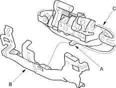
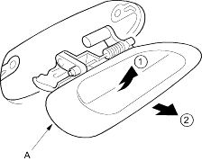
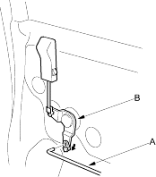

- If equipped, release the hook (A), then remove the outer handle protector (B) from the outer handle (C).

- Pull out the outer handle (A), then remove it.

- Install the handle in the reverse order of removal and make sure the door locks and opens properly.
- Raise the glass fully.
- Remove these items:
- Door panel (see page 20-152)
- Plastic cover, as necessary (see page 20-142)
- Rod protector, for some models (see step 3 on page 20-154)
- Disconnect the lock rod (A) from the lock crank (B).
